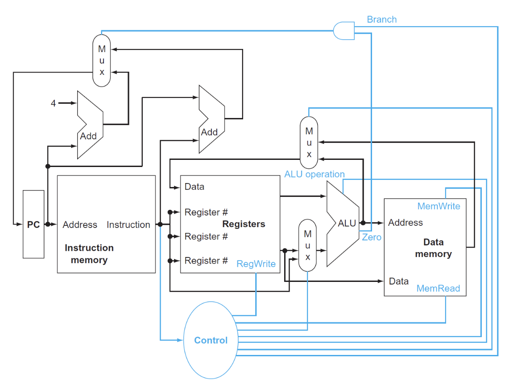

Single-Cycle Processor¶
Intro¶
指令执行的步骤概述：
- 最开始的两步是相同的：
-
Fetch 从指令内存中拿出指令
-
Decode and Read Operands 解码并读寄存器
- 在进行指令解码完成前就可以读取数据，因为数据位置是固定的，并且读数据不会破坏数据，所以无论是否使用，都会先拿出对应的register operands。
-
Executive Control
所有的指令都会经过ALU，根据指令的类型进行不同的ALU操作：
- 内存引用指令：Memory Reference
- 算术逻辑指令：Arithmetic and Logic
- 条件分支指令：判断两数是否相等
-
Memory Access
通过load和store指令访问数据
- 内存引用指令：访问内存进行读写
- 算术逻辑指令/加载指令：将内存或者寄存器中的数据写入寄存器
- 条件分支指令：根据比较结果更新PC：PC+4 或到指定目标地址
-
Write results
-
Update PC
simple processor

三个红色圆圈是多路选择器，因为需要对不同的数据来源进行选择，比如ALU中的输入既可以是R型指令中的两个源寄存器，也可以是I型指令中的一个源寄存器和一个立即数。
with control

Clock Methodology¶
Datapath¶
构建数据通路时，我们关心的是指令中的存储数据而不是控制信号。
Instruction Fetch¶

64bit寄存器，需要64个D触发器。
R Inst¶

- Register File: 寄存器堆，用于存储所有寄存器
- 进行选择的wire是5位，因为寄存器有32个。
- 读取数据只需要进行选择（在R型指令前已经有ld指令将数据写入寄存器），写入数据需要受
RegWrite信号控制
- ALU: 进行算术逻辑运算
- 有一个四位的MUX进行控制，但事实上只需要三位，有一位是浪费的（但我们必须使用四位，因为MUX的输入端口数必须是2的幂次）
Load Store Inst¶
除了R型指令用到的两个元件，还需要两个

- Data Memory: 数据内存,不同于Register File，Data Memory同时具有读写控制
- 读取数据ld需要受
MemRead信号控制，写入数据sd需要受MemWrite信号控制- 内存的读取需要控制信号的原因是：并不是所有指令都会有访存操作，所以那些用不到内存值的指令就没必要读取内存数据，因此需要控制信号来关闭这扇门；而所有指令都要从寄存器堆里读取数据，因此寄存器堆的读取无需控制信号
- 读取数据ld需要受
- Imm Gen: 从 32 位指令中提取出与立即数相关的位，将这些位按正确的顺序拼接起来，同时对其符号扩展至 64 位
Branch Inst¶
这里只考虑了beq指令

- 寄存器用于存放两个被比较的源操作数，进入ALU进行比较
- ALU：第一个ALU的作用是进行比较，并且有一个zero用于判断是否相等进而选择PC+4还是branch target address；第二个ALU只有加法，用于计算branch target address
- Shift left 1:根据之前学到的，在进行branch target address计算时，我们所需的offset在立即数中是真实值的一半，因此对于Imm Gen输出的立即数，我们需要进行左移一位的操作乘2
Compose¶
- 每个数据通路都是单周期的
datapath

All types' datapath

R-type 的指令是完全建立在Register File上的，没有与内存的交互，使用R指令一定是在内存读取后进行的。


Control Unit¶
只有7+4根信号
实际上只需要处理八个信号
8 signals

ALU Control¶
ALU的控制信号一共有4位：
- 其中2位分别来自funct3和funct7
- 另外2位是来自ALUop，它来自主控制单元 (main control unit)，用于指定具体执行何种指令，不同的值对应不同的类型：
- 00：加载/存储指令
- 01：条件分支指令
- 10：R型指令
- 11：I型指令（addi andi）好像会用到？
ALU control
| Instruction opcode | ALUOp | Operation | Funct7 | Funct3 | Desired ALU action | ALU control Input |
|---|---|---|---|---|---|---|
| ld | 00 | load doubleword | XXXXXXX | XXX | add | 0010 |
| sd | 00 | store doubleword | XXXXXXX | XXX | add | 0010 |
| beq | 01 | branch if equal | XXXXXXX | XXX | subtract | 0110 |
| R-type | 10 | and | 0000000 | 111 | AND | 0000 |
| R-type | 10 | or | 0000000 | 110 | OR | 0001 |
| R-type | 10 | add | 0000000 | 000 | add | 0010 |
| R-type | 10 | sub | 0100000 | 000 | subtract | 0110 |
| R-type | 10 | slt | 0000000 | 010 | slt | 0111 |
| R-type | 10 | srl | 0000000 | 101 | srl | 0101 |
| R-type | 10 | xor | 0000000 | 011 | xor | 0011 |
采用两级解码，根据opcode就可以判断7根信号线的值，这时候 ALU 再看funct3和funct7就可以判断出剩下的4根信号线的值。

Main Control Unit¶
余下的六个控制信号的作用如下：

- ALUSrc: 决定ALU的第二个输入，0时从寄存器堆中读取数据，1时从立即数中读取数据
- PCSrc: 决定PC的值，0时选择PC+4，1时选择branch target address
- MemtoReg: 00时将ALU的结果返回给目标寄存器，01时将内存中的数据返回给目标寄存器，
最终：

 ¶
¶
Operation of Datapath¶
灰色的元件代表没有被使用


- IF：取指，递增PC
- ID：从寄存器堆中读取x2
- EX：ALU计算x2的数据和经过imm符号扩展的offset的和，得到内存地址
- MEM：根据地址得到对应数据
- WB：将数据写入x1

Pipelining Process¶
流水线Pipeline的本质是提高吞吐量，通过将指令的执行过程分解为多个阶段，每个阶段在不同的时钟周期内执行，从而在每个时钟周期内完成多条指令的执行。
在RISC-V中，流水线Pipeline的实现方式是：
- IF: Instruction Fetch 从指令内存中取出指令
- ID: Instruction Decode 解码指令
- EX: Execute 执行指令
- MEM: Memory Access 访问内存
- WB: Write Back 写回寄存器
pipeline

图形左半边阴影是写入，右半边阴影是读取，全阴影是都有（这里假设在一个时钟周期内，元件的前半个周期可以进行写操作，后半个周期可以进行读操作）
寄存器读写
注意到对于寄存器的读写操作，只占用时钟周期的一半，但是ID和WB的完成分别是在一个时钟周期的前后两个部分，只是因为有时对寄存器的操作是同时进行的，为了避免冲突，所以才将ID和WB的完成时间错开，这一操作是通过将读写的操作分别由clk的上升沿和下降沿完成实现的


但是不是所有指令都需要执行所有阶段的指令的，比如load和store指令就不需要执行EX和MEM阶段。
性能方面：理想条件下
时钟周期
流水线CPU的时钟周期 = 耗时最长的阶段所花的时间
- 只有当每个阶段的时间相等的理想情况发生，才会有上述的性能提升
- 同时对于Latency，每个指令是不减的
Success
Pipeline 是通过增加通量（throughput）来提高性能的，而不是减少Latency
Hazards¶
Harzard（竞争）：
是指由于某种原因指令无法按照预期顺序继续执行，分为以下三种：
-
Structure Hazards
- 需要的资源被占用，导致指令无法继续执行
- 如多条加载存储指令在同一个时钟周期内对同一块内存进行访问
-
Data Hazards
- 需要等待上一条指令完成数据写入或者读取完成才能进行后续操作
-
解决方案：添加额外的硬件前递（forwarding）或称为旁路（bypassing）
-

- 只有当目标阶段比源阶段晚时，才能进行前递
-
这一情况对于R型指令是适用的，但是如果先执行加载指令，后执行依赖于该加载指令数据的指令，即使加了一个前递，CPU 还是不得不暂停一个时钟周期，这种情况称为加载使用数据冒险(load-use data hazard)，如下图所示：

中间的气泡称为流水线停顿（pipeline stall）或者bubble
这种情况我们可以通过软件层面的优化来解决：
顺序调整
得到一个自然的汇编代码：
ld x1, 0(x31) ld x2, 8(x31) add x3, x1, x2 sd x3, 24(x31) ld x4, 16(x31) add x5, x1, x4 sd x5, 32(x31) //我们可以看到高亮的两组代码都发生了load-use data hazard，需要增加两个stallld x1, 0(x31) ld x2, 8(x31) ld x4, 16(x31) add x3, x1, x2 sd x3, 24(x31) add x5, x1, x4 sd x5, 32(x31) //因为在这里我们提前了f的读取，正好给了b读取指令时间，所以不需要增加stall了
这种计算也是要掌握的，需要自己判断是否加入stall
-
Control Hazards
- 需要决定的控制信号依赖于先前的指令，导致无法确定下一条指令的执行
- 解决方案：将寄存器的比较和目标地址的计算提前到ID阶段
- 但是这样仍然会有一个bubble的产生：

- 我们需要一个更好的解决方法：分支预测：
- 一种方法是静态预测
- 无论什么条件都进行跳转，如果成功则继续进行，如果失败就撤回错误指令，这需要一个额外的时钟周期，效果就和插入bubble一样了，这样至少提高50%效率
- 另一种方法是动态预测
DataPath in Pipeline¶
根据指令执行的阶段，将先前的datapath进行划分：

大多数情况下，指令执行的顺序都是从左到右，但是也有例外：
- 最后的写回阶段，将内存的数据写入寄存器是从右往左的（可能会导致数据冒险）
-
PC寄存器的输入数据（两种选择）是从右往左传递给PC选择MUX的（可能会导致控制冒险）
-
在流水线中我们需要储存进入执行的指令，因此需要一个额外的寄存器，叫做流水线寄存器，位于两个阶段之间

ld process of pipeline

- 将PC寄存器的指令地址传给IF/ID流水线寄存器，供下一条指令使用
- 同时传递指令内容

- 除了继续传递指令地址，还要传递寄存器堆的数据和立即数

- 将计算好的内存地址放入EX/MEM

- 从EX/MEM读取内存地址，然后将对应的内存数据写入MEM/WB

- 从MEM/WB读取内存数据，然后将数据写入寄存器
save register number
在最后写回数据时，我们的指令中已经没有需要写回的寄存器编号了，所以我们改进了这个设计，将寄存器编号放在流水线寄存器中，这样在WB阶段就可以直接使用
Control in Pipeline¶
在单周期CPU中我们引入了一系列控制信号来进行控制，在这里流水线CPU也需要控制指令，并且这些控制指令也是随着流水型寄存器的传递而传递的

可以看到控制信号随着流水线的进行逐渐被使用，被使用的信号将不再被传递，节约了空间
在加入控制器后：

Data Harzards Fixing¶
data hazard的解决方法有两种，一种是进行前递forwarding，另一种是进行停顿stall
Forwarding¶
可以看到x2寄存器的值在sub后的四个指令中都被使用，在正常情况下，x2寄存器的值需要等到MEM阶段才能被写入，但是我们在ALU后的输出端已经得到最终x2的数值了，可以通过前递将结果传递给接下来的指令

图中蓝色的寄存器是需要前递数据的寄存器，我们在EX阶段得到x2的数值后，放入EX/MEM流水线寄存器的rd位置，记这段数据为：
我们需要用这些数据的寄存器是：